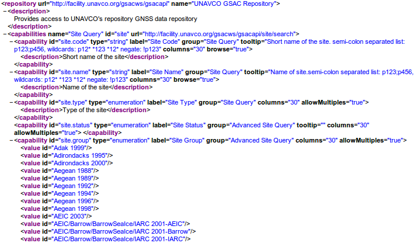
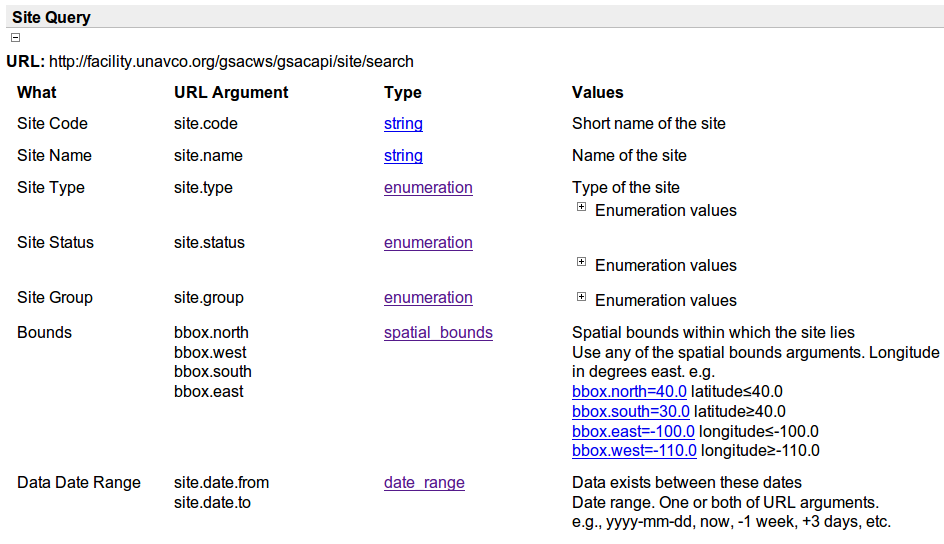

| Previous | Next |
The GSAC Information page has links for information needed to access a repository via the GSAC server. In a way this is a collection of capabilities for this particular server. These are something like a WSDL (Web Services Description Language) document, an XML format file for describing network services, but not a true WSDL. The specific items listed here are shared across all GSACs and all them to inter-operate when needed.
The Repository information XML link shows something like:

This is a list in XML format of all the items in the database underlying a particular GSAC, which that GSAC has implemented for searches.
In a row like
The 'id-s' in the "Repository information xml" are GSAC's internal names for parameters and these names are common to all GSAC repositories. These are also listed as the "URL argument" in the Information pages sections Site Query, File Query, Misc Arguments, Output Types, and Vocabularies
.The XML also shows all allowed values for enumerated types of data in the database, such as the Site Group values (names) in the XML file fragment shown above.
The "Repository information XML" is used by federated GSAC repositories to find how to interact with other GSAC respositories.
You can see a complete "Repository information XML" at http://facility.unavco.org/gsacws/gsacapi/repository/view?output=XML.
The Base URL is the first part of a URL for this particular GSAC-enabled repository; For example the UNAVCO GSAC repository has base URL http://facility.unavco.org/gsacws. The remainder of the URL is the same for all GSAC repositories. See the Help: API section for examples.
The information available under Site Query shows all the parameter names (GSAC 'URL arguments'), data types ('Type') and meaning of the data parameters ('Values') you can query on in a GSAC implementation, for example, this partial list from the UNAVCO GSAC:

Similarly, the information in the links File Query, Misc Arguments, Output Types, and Vocabularies is used in the GSAC API. See the Help: API section .
| Previous | Next |